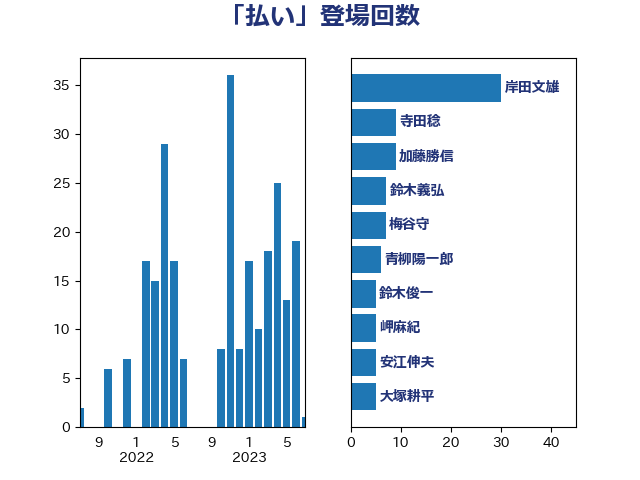

単語「払い」

| 岸田文雄 | 自由民主党 | 30 回 |
| 寺田稔 | 自由民主党 | 9 回 |
| 加藤勝信 | 自由民主党 | 9 回 |
| 鈴木義弘 | 国民民主党 | 7 回 |
| 梅谷守 | 立憲民主党 | 7 回 |
| 青柳陽一郎 | 立憲民主党 | 6 回 |
| 鈴木俊一 | 自由民主党 | 5 回 |
| 岬麻紀 | 日本維新の会 | 5 回 |
| 安江伸夫 | 公明党 | 5 回 |
| 大塚耕平 | 国民民主党 | 5 回 |
| 萩生田光一 | 自由民主党 | 4 回 |
| 鈴木庸介 | 立憲民主党 | 3 回 |
| 浅野哲 | 国民民主党 | 3 回 |
| 柳ヶ瀬裕文 | 日本維新の会 | 3 回 |
| 太田房江 | 自由民主党 | 3 回 |
| 原口一博 | 立憲民主党 | 3 回 |
| 一谷勇一郎 | 日本維新の会 | 3 回 |
| 野村哲郎 | 自由民主党 | 2 回 |
| 遠藤良太 | 日本維新の会 | 2 回 |
| 西村康稔 | 自由民主党 | 2 回 |
| 荒井優 | 立憲民主党 | 2 回 |
| 舟山康江 | 国民民主党 | 2 回 |
| 玉木雄一郎 | 国民民主党 | 2 回 |
| 永岡桂子 | 自由民主党 | 2 回 |
| 櫻井周 | 立憲民主党 | 2 回 |
| 後藤茂之 | 自由民主党 | 2 回 |
| 山添拓 | 日本共産党 | 2 回 |
| 寺田静 | 無所属 | 2 回 |
| 宮本徹 | 日本共産党 | 2 回 |
| 室井邦彦 | 日本維新の会 | 2 回 |
| 吉良よし子 | 日本共産党 | 2 回 |
| 倉林明子 | 日本共産党 | 2 回 |
| 中野英幸 | 自由民主党 | 2 回 |
| 高橋千鶴子 | 日本共産党 | 1 回 |
| 高木陽介 | 公明党 | 1 回 |
| 高木真理 | 立憲民主党 | 1 回 |
| 馬場伸幸 | 日本維新の会 | 1 回 |
| 阿部司 | 日本維新の会 | 1 回 |
| 長友慎治 | 国民民主党 | 1 回 |
| 逢坂誠二 | 立憲民主党 | 1 回 |
| 藤丸敏 | 自由民主党 | 1 回 |
| 若林健太 | 自由民主党 | 1 回 |
| 若松謙維 | 公明党 | 1 回 |
| 舞立昇治 | 自由民主党 | 1 回 |
| 自見はなこ | 自由民主党 | 1 回 |
| 羽田次郎 | 立憲民主党 | 1 回 |
| 細田健一 | 自由民主党 | 1 回 |
| 竹詰仁 | 国民民主党 | 1 回 |
| 窪田哲也 | 公明党 | 1 回 |
| 田名部匡代 | 立憲民主党 | 1 回 |
| 牧山ひろえ | 立憲民主党 | 1 回 |
| 熊谷裕人 | 立憲民主党 | 1 回 |
| 源馬謙太郎 | 立憲民主党 | 1 回 |
| 浜田聡 | NHK党 | 1 回 |
| 津島淳 | 自由民主党 | 1 回 |
| 泉健太 | 立憲民主党 | 1 回 |
| 江藤拓 | 自由民主党 | 1 回 |
| 森山浩行 | 立憲民主党 | 1 回 |
| 柴愼一 | 立憲民主党 | 1 回 |
| 松本剛明 | 自由民主党 | 1 回 |
| 早稲田ゆき | 立憲民主党 | 1 回 |
| 徳永エリ | 立憲民主党 | 1 回 |
| 平沼正二郎 | 自由民主党 | 1 回 |
| 平木大作 | 公明党 | 1 回 |
| 岩谷良平 | 日本維新の会 | 1 回 |
| 小池晃 | 日本共産党 | 1 回 |
| 小川淳也 | 立憲民主党 | 1 回 |
| 塩川鉄也 | 日本共産党 | 1 回 |
| 堤かなめ | 立憲民主党 | 1 回 |
| 堂込麻紀子 | 無所属 | 1 回 |
| 城井崇 | 立憲民主党 | 1 回 |
| 国光あやの | 自由民主党 | 1 回 |
| 古賀千景 | 立憲民主党 | 1 回 |
| 古賀之士 | 立憲民主党 | 1 回 |
| 伊藤孝恵 | 国民民主党 | 1 回 |
| 井上哲士 | 日本共産党 | 1 回 |
| 中島克仁 | 立憲民主党 | 1 回 |
| 下条みつ | 立憲民主党 | 1 回 |
| 上野通子 | 自由民主党 | 1 回 |
| 三浦信祐 | 公明党 | 1 回 |
| おおつき紅葉 | 立憲民主党 | 1 回 |